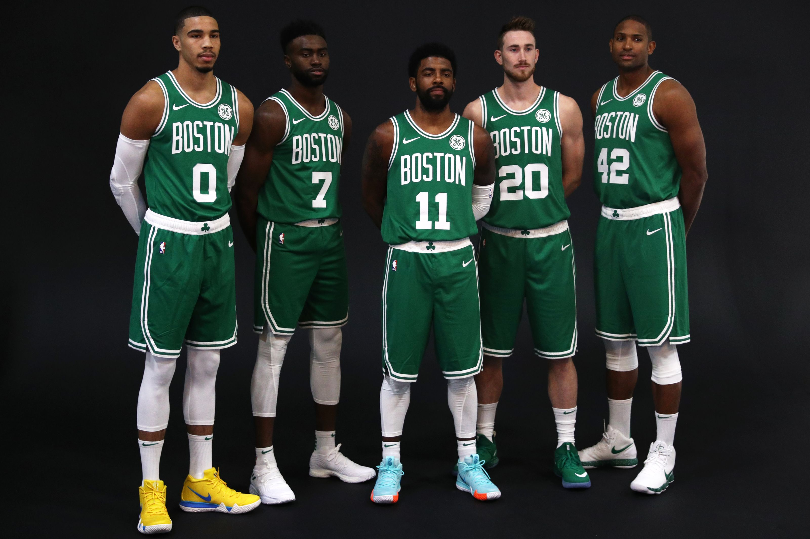

Boston Celtics
After losing to Cleveland last season in the Eastern Conference Finals, the celtics got off to a pretty slow start. I believe the deepest spot they sat in the standings was around 6th in the conference. For the caliber of talent on the team that standings spot did not sit well with C's fans. Since the First of December the Celtics have one of the best records in basketball, and the group is starting to play better together. At times the team seems to be in a funk where they'll drop 3 or 4 games in a row, which is concerning for the Boston fan base who expect championships.